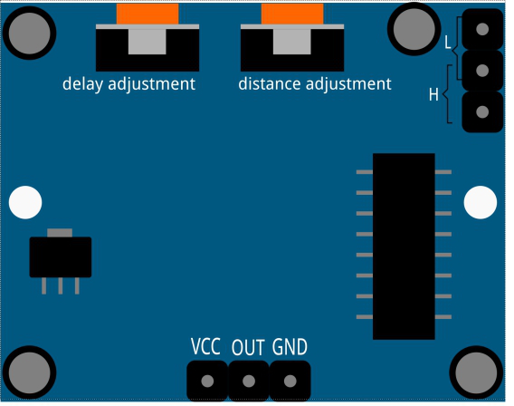

2.31 PIR-Modul¶
Überblick¶
In dieser Lektion lernen Sie den Umgang mit dem PIR-Modul. Der PIR-Sensor erfasst Infrarot-Wärmestrahlung oder das Vorhandensein eines biologischen Körpers, der Infrarot-Wärmestrahlung emittiert. Dieses Modul wird im täglichen Leben häufig für unseren Einbruchalarm und unsere Besuchsaufforderung verwendet.
Erforderliche Komponenten¶

Komponenteneinführung¶
{kind=link}
Der PIR-Sensor ist in zwei Steckplätze unterteilt, die an einen Differenzverstärker angeschlossen sind. Immer wenn sich ein stationäres Objekt vor dem Sensor befindet, empfangen beide Schlitze die gleiche Strahlungsmenge und der Ausgang ist Null. Immer wenn sich ein sich bewegendes Objekt vor dem Sensor befindet, empfängt einer der Schlitze mehr Strahlung als der andere, wodurch der Ausgang stark oder niedrig schwankt. Diese Änderung der Ausgangsspannung ist ein Ergebnis der Bewegungserkennung.
Nachdem das Sensormodul verdrahtet wurde, erfolgt eine einminütige Initialisierung. Während der Initialisierung wird das Modul in Intervallen 0 bis 3 Mal ausgegeben. Dann befindet sich das Modul im Standby-Modus. Bitte halten Sie die Lichtquelle und andere Störungen von der Oberfläche des Moduls fern, um Fehlbedienungen aufgrund von Störsignalen zu vermeiden. Auch Sie sollten das Modul besser ohne zu viel Wind verwenden, da der Wind auch den Sensor stören kann. Zwei Triggermodi: (Auswahl verschiedener Modi mithilfe der Überbrückungskappe).
Abstandseinstellung
{kind=link}
Drehen Sie den Knopf des Potentiometers zur Entfernungseinstellung im Uhrzeigersinn, um den Erfassungsentfernungsbereich zu vergrößern. Der maximale Erfassungsentfernungsbereich beträgt ca. 0-7 Meter. Wenn Sie ihn gegen den Uhrzeigersinn drehen, verringert sich die Reichweite der Erfassungsentfernung, und die minimale Reichweite der Erfassungsentfernung beträgt etwa 0 bis 3 Meter.
Zwei Triggermodi: (Auswahl verschiedener Modi mithilfe der Überbrückungskappe).
H: Wiederholbarer Triggermodus, Nach dem Erfassen des menschlichen Körpers gibt das Modul einen hohen Pegel aus. Wenn während der nachfolgenden Verzögerungszeit jemand den Erfassungsbereich betritt, bleibt der Ausgang auf dem hohen Pegel.
L：Nicht wiederholbarer Triggermodus, der einen hohen Pegel ausgibt, wenn er den menschlichen Körper erfasst. Nach der Verzögerung wechselt der Ausgang automatisch von einem hohen zu einem niedrigen Pegel.
Fritzing Circuit¶
In diesem Beispiel können wir die Pins des Soundsensormoduls direkt mit den Pins auf der Mega 2560-Platine verbinden und mit dem digitalen Pin 2 das Signal des PIR-Moduls lesen. Verbinden Sie den VCC des PIR-Moduls mit 5 V, GND mit GND und OUT mit dem digitalen Pin. HINWEIS: Sie können die PIR-Abdeckung entfernen, um die Pin-Markierung zu sehen.

Schematische Darstellung

Code¶
Nachdem die Codes auf die Mega2560-Karte hochgeladen wurden, können Sie den seriellen Monitor öffnen, um den Lesewert des Pins anzuzeigen. Wenn das PIR-Modul Aktivitäten in der Nähe erkennt, zeigt der serielle Monitor 「1」 an. Andernfalls wird 「0」 angezeigt. Weitere Informationen zum Code finden Sie in Teil 1- 1.4 Digital Read.
Das PIR-Modul verfügt über zwei Potentiometer: Das eine dient zum Einstellen der Empfindlichkeit und das andere zum Einstellen des Erfassungsabstands. Damit das PIR-Modul besser funktioniert, müssen Sie versuchen, diese beiden Potentiometer einzustellen.
Phänomen Bild¶